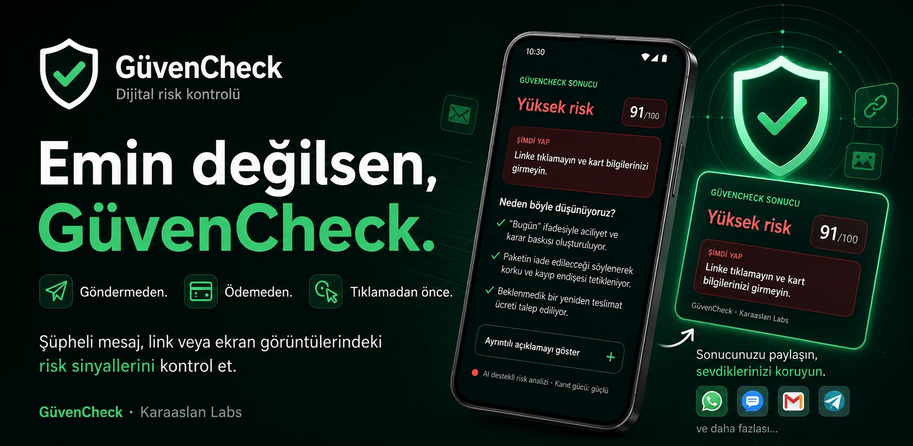
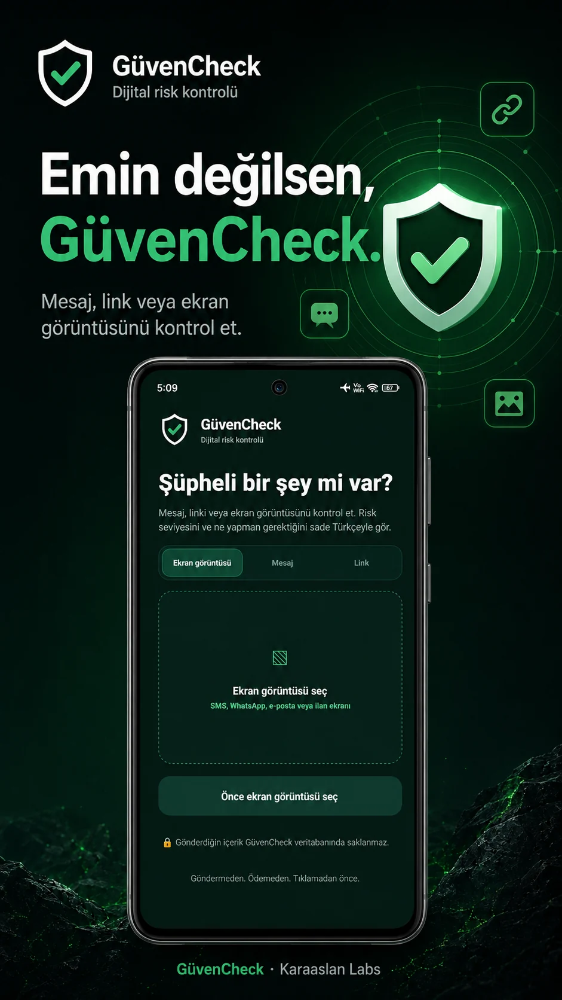
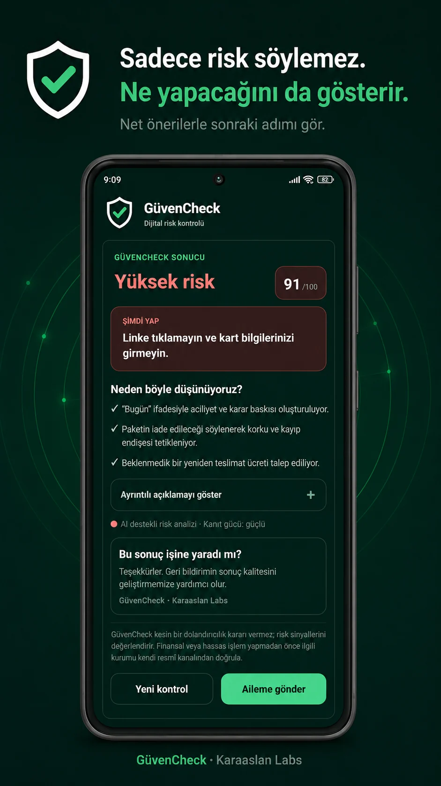

Ürünler & Yeni Girişimler
Gerçek kullanıcı ihtiyacı ve sürdürülebilir iş mantığı taşıyan yeni ürün ve teknoloji girişimlerini araştırır, doğrular ve geliştiririz.
Karaaslan Labs · Teknoloji Şirketi
Karaaslan Labs; yazılım, yapay zekâ, otomasyon ve araştırma kabiliyetlerini bir araya getirerek gerçek problemler üzerinde çalışan bir teknoloji şirketidir. Tek bir ürün, sektör ya da teknoloji trendiyle sınırlı değiliz; değer üretebileceğimiz alanları araştırır, doğrular ve inşa ederiz.
Ne üzerinde çalışıyoruz
Teknolojiyi belirli bir ürün türüne veya sektöre sıkıştırmıyoruz. Problem, ihtiyaç ve ekonomik değer güçlü olduğunda farklı alanlarda çalışabilir; aynı disiplinle araştırır, doğrular ve geliştiririz.
Gerçek kullanıcı ihtiyacı ve sürdürülebilir iş mantığı taşıyan yeni ürün ve teknoloji girişimlerini araştırır, doğrular ve geliştiririz.
Bir problemi güvenilir biçimde çözmek için gereken yazılımı, iş akışını ve teknik sistemi en düşük yeterli karmaşıklıkla kurarız.
Yapay zekâ ve otomasyonu araştırma, geliştirme, analiz ve operasyon kapasitesini artıran bir kaldıraç olarak kullanırız.
Büyük yatırım yapmadan önce problem, kullanıcı, pazar, teknik uygulanabilirlik ve gerçek değer sinyallerini mümkün olduğunca kanıtlarız.
Nasıl çalışıyoruz
Teknoloji bizim için amaç değil. Doğru problem, güvenilir çözüm ve sürdürülebilir değer üretmek için kullandığımız araçtır.
İhtiyacın, kullanım davranışının, mevcut çözümün ve gerçek sonucun ne olduğunu anlamadan büyük kapsam açmayız.
Varsayımları mümkün olduğunca erken; gerçek kullanım, davranış, maliyet, gelir veya başka somut sinyallerle test ederiz.
Kanıtlanan ihtiyaca göre sade, sağlam ve geliştirilebilir ürün veya sistem kurarız.
Çalışan şeyi ölçer, gereksiz karmaşıklığı azaltır ve gerçek kullanımın kanıtladığı kabiliyetleri tekrar kullanılabilir hale getiririz.
Teknoloji ve execution
Yapay zekâ, otomasyon ve yazılım mühendisliğini araştırmadan geliştirmeye, analizden operasyona kadar çalışma biçimimizin doğal bir parçası olarak kullanıyoruz.
Otomasyonu yalnız mümkün olduğu için değil, güvenilirliği ve sonucu gerçekten iyileştirdiği yerde genişletiyoruz. İnsan kararı, kontrol ve görünürlük gereken noktalarda korunur.
Güncel çalışma
Şüpheli bir dijital içerik mi gördün? GüvenCheck’e sor.
GüvenCheck; mesaj, bağlantı/URL, internet sitesi, fotoğraf, görsel ve ekran görüntüsü gibi şüpheli dijital içerikleri değerlendirerek riski, nedenini ve şimdi ne yapılabileceğini daha anlaşılır hale getirmeyi amaçlayan Karaaslan Labs ürünüdür.
GüvenCheck bugün Karaaslan Labs’ın gerçek ürün çalışmalarından biridir; şirketin çalışabileceği alanların tamamını tanımlamaz.



Çalışma prensipleri
Büyümeyi heyecanın değil, gerçek kullanım ve iş kanıtının üzerine kurmayı tercih ederiz.
İhtiyaç duyulmayan sistemi, özelliği veya altyapıyı sırf mümkün olduğu için eklemeyiz.
Güvenlik, gizlilik, açıklık ve tutarlılığı ürün ve sistem kararlarının tasarım girdisi olarak ele alırız.
Gerçek işte kanıtlanan bilgi, altyapı ve çalışma kabiliyetlerini sonraki işleri daha iyi yapmak için biriktiririz.
Karaaslan Labs
Karaaslan Labs, gerçek problemleri teknolojiyle çözen; ürünler, sistemler ve yeni girişimler geliştiren bir teknoloji şirketidir.
Bugün yazılım, yapay zekâ, otomasyon, araştırma ve ürün geliştirme kabiliyetlerini birlikte kullanıyoruz. Yarın güçlü bir problem başka bir teknoloji veya sektördeyse, alanı değil prensipleri sabit tutarız.
Amacımız daha fazla teknoloji kullanmak değil; daha doğru problemleri seçmek, daha güvenilir çözümler geliştirmek ve her çalışma döngüsünde şirketin üretme kapasitesini artırmaktır.
İletişim
Ürünler, yeni teknoloji girişimleri, iş birlikleri ve Karaaslan Labs ile ilgili kurumsal iletişim için:
contact@karaaslanlabs.com